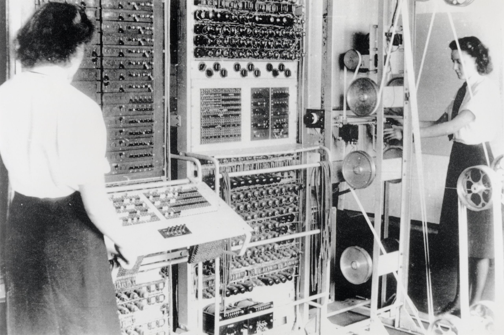

Historia Komputera cyfrowego
Elektromechaniczny
Do 1938 roku Marynarka Wojenna Stanów Zjednoczonych opracowała elektromechaniczny komputer analogowy, wystarczająco mały, aby można go było używać na pokładzie łodzi podwodnej. Był to komputer danych torpedowych, który wykorzystywał trygonometrię do rozwiązania problemu wystrzelenia torpedy w poruszający się cel. Podczas II wojny światowej podobne urządzenia opracowano także w innych krajach.

Wczesne komputery cyfrowe były elektromechaniczne; przełączniki elektryczne sterowały przekaźnikami mechanicznymi w celu wykonania obliczeń. Urządzenia te miały niską prędkość roboczą i ostatecznie zostały zastąpione przez znacznie szybsze komputery całkowicie elektryczne, pierwotnie wykorzystujące lampy próżniowe. Z2, stworzony przez niemieckiego inżyniera Konrada Zuse w 1939 roku w Berlinie, był jednym z najwcześniejszych przykładów komputera z przekaźnikiem elektromechanicznym.
.jpg)
W 1941 roku Zuse kontynuował swoją wcześniejszą maszynę, tworząc Z3, pierwszy na świecie działający elektromechaniczny, programowalny, w pełni automatyczny komputer cyfrowy. Z3 został zbudowany z 2000 przekaźników, stosując 22-bitową długość słowa i pracującą z częstotliwością zegara około 5–10 Hz. Kod programu dostarczano na dziurkowanej folii, a dane można było przechowywać w 64 słowach pamięci lub dostarczać z klawiatury. Pod pewnymi względami był bardzo podobny do nowoczesnych maszyn i był pionierem w wielu postępach, takich jak liczby zmiennoprzecinkowe. Zamiast trudniejszego do wdrożenia systemu dziesiętnego (używanego we wcześniejszym projekcie Charlesa Babbage'a) użycie systemu binarnego oznaczało, że maszyny Zuse były łatwiejsze w budowie i potencjalnie bardziej niezawodne, biorąc pod uwagę dostępne wówczas technologie. Z3 sam w sobie nie był komputerem uniwersalnym, ale można go było rozbudować, aby był kompletny w technologii Turing.
Następny komputer Zuse, Z4, stał się pierwszym komputerem komercyjnym na świecie; po początkowych opóźnieniach spowodowanych drugą wojną światową, ukończono go w 1950 r. i dostarczono do ETH Zurich. Komputer został wyprodukowany przez własną firmę Zuse, Zuse KG [ de ] , która została założona w 1941 roku jako pierwsza firma, której wyłącznym celem było opracowywanie komputerów w Berlinie.
Lampy próżniowe i cyfrowe obwody elektroniczne
Czysto elektroniczne elementy obwodów wkrótce zastąpiły swoje mechaniczne i elektromechaniczne odpowiedniki, w tym samym czasie obliczenia cyfrowe zastąpiły analogowe. Inżynier Tommy Flowers, pracujący w latach trzydziestych XX wieku w Post Office Research Station w Londynie, zaczął badać możliwości wykorzystania elektroniki w centrali telefonicznej. Eksperymentalny sprzęt, który zbudował w 1934 roku, zaczął działać pięć lat później, przekształcając część sieci centrali telefonicznej w system elektronicznego przetwarzania danych, wykorzystujący tysiące lamp próżniowych. W Stanach Zjednoczonych John Vincent Atanasoff i Clifford E. Berry z Iowa State University opracowali i przetestowali w 1942 r. komputer Atanasoff – Berry Computer (ABC), pierwszy „automatyczny elektroniczny komputer cyfrowy”. Ten projekt był również w pełni elektroniczny i używany około 300 lampy próżniowe z kondensatorami umieszczonymi w mechanicznie obracającym się bębnie w celu zapewnienia pamięci.
Podczas II wojny światowej brytyjscy łamacze szyfrów w Bletchley Park odnieśli szereg sukcesów w łamaniu zaszyfrowanych niemieckich komunikatów wojskowych. Niemiecka maszyna szyfrująca Enigma została po raz pierwszy zaatakowana przy pomocy bomb elektromechanicznych, którymi często kierowały kobiety. Aby złamać bardziej wyrafinowaną niemiecką maszynę Lorenz SZ 40/42, używaną w komunikacji wojskowej wysokiego szczebla, Max Newman i jego współpracownicy zlecili Flowersowi zbudowanie Kolosa. Od początku lutego 1943 roku spędził jedenaście miesięcy na projektowaniu i budowie pierwszego Kolosa. Po teście funkcjonalnym przeprowadzonym w grudniu 1943 r. „Colossus” został wysłany do Bletchley Park, gdzie został dostarczony 18 stycznia 1944 r., a 5 lutego zaatakował swoją pierwszą wiadomość.
Colossus był pierwszym na świecie elektronicznym, cyfrowym programowalnym komputerem. Stosowano dużą liczbę zaworów (lamp próżniowych). Miał wejście na taśmie papierowej i można go było skonfigurować do wykonywania różnych operacji logicznych boolowskich na swoich danych, ale nie był kompletny w technologii Turinga. Zbudowano dziewięć Colossi Mk II (Mk I przerobiono na Mk II, co dało w sumie dziesięć maszyn). Colossus Mark I zawierał 1500 zaworów termionowych (lamp), ale Mark II z 2400 zaworami był pięć razy szybszy i prostszy w obsłudze niż Mark I, znacznie przyspieszając proces dekodowania

ENIAC (Electronic Numerical Integrator and Computer) był pierwszym elektronicznym programowalnym komputerem zbudowanym w USA. Chociaż ENIAC był podobny do Colossusa, był znacznie szybszy, bardziej elastyczny i był kompletny w oparciu o architekturę Turinga. Podobnie jak w przypadku Colossusa, „program” w ENIAC-u był definiowany przez stany jego kabli krosowych i przełączników, co znacznie różniło się od późniejszych maszyn elektronicznych z zapisanym programem. Po napisaniu programu należało go mechanicznie wprowadzić do maszyny, ręcznie resetując wtyczki i przełączniki. Programistami ENIAC było sześć kobiet, często nazywanych zbiorczo „dziewczynami ENIAC”.
Łączył w sobie dużą prędkość elektroniki z możliwością programowania dla wielu złożonych problemów. Mogła dodawać i odejmować 5000 razy na sekundę, tysiąc razy szybciej niż jakakolwiek inna maszyna. Miał także moduły do mnożenia, dzielenia i pierwiastkowania. Pamięć o dużej szybkości była ograniczona do 20 słów (około 80 bajtów). Zbudowany pod kierunkiem Johna Mauchly'ego i J. Prespera Eckerta na Uniwersytecie Pensylwanii, rozwój i budowa ENIAC-a trwała od 1943 r. do pełnej gotowości do pracy pod koniec 1945 r. Maszyna była ogromna, ważyła 30 ton i zużywała 200 kilowatów energii elektrycznej. zawierał ponad 18 000 lamp próżniowych, 1500 przekaźników i setki tysięcy rezystorów, kondensatorów i cewek indukcyjnych.